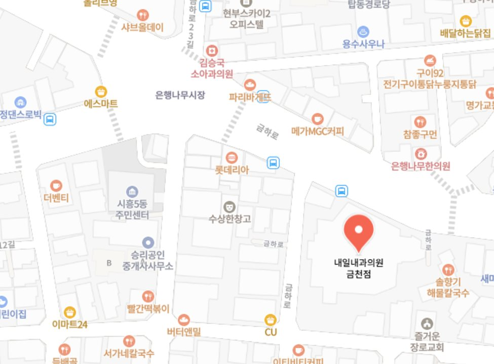
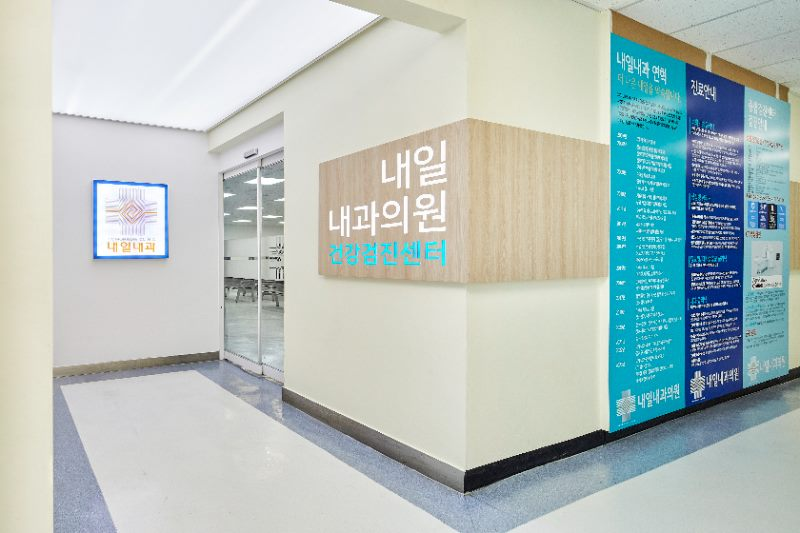
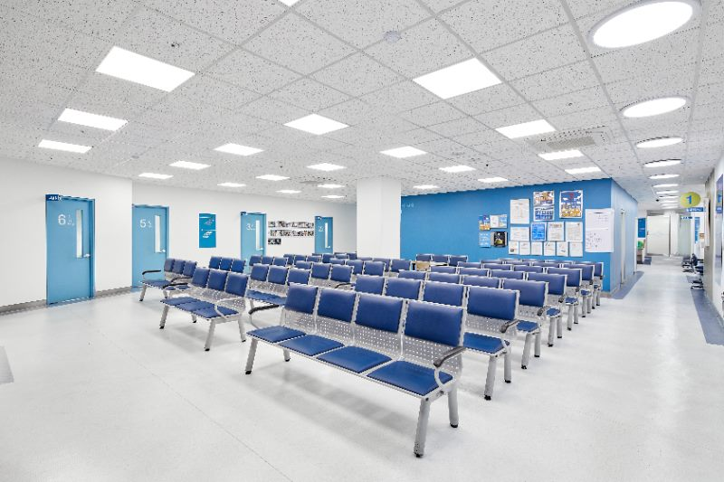
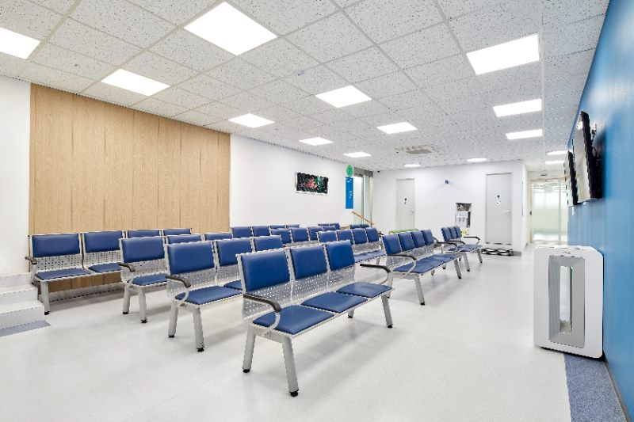
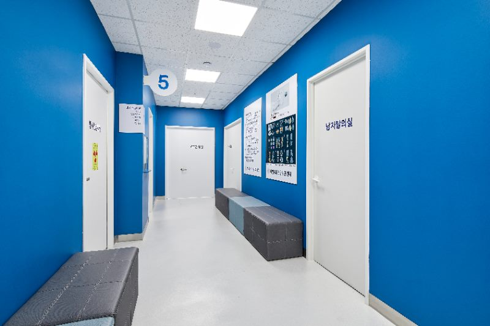
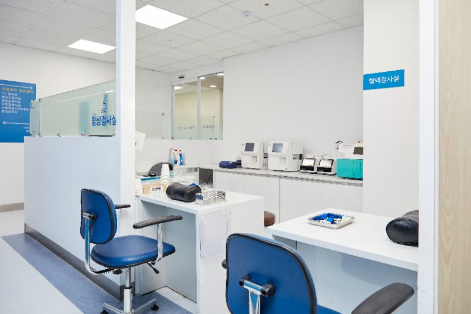
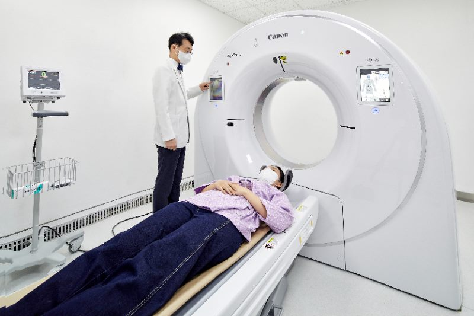
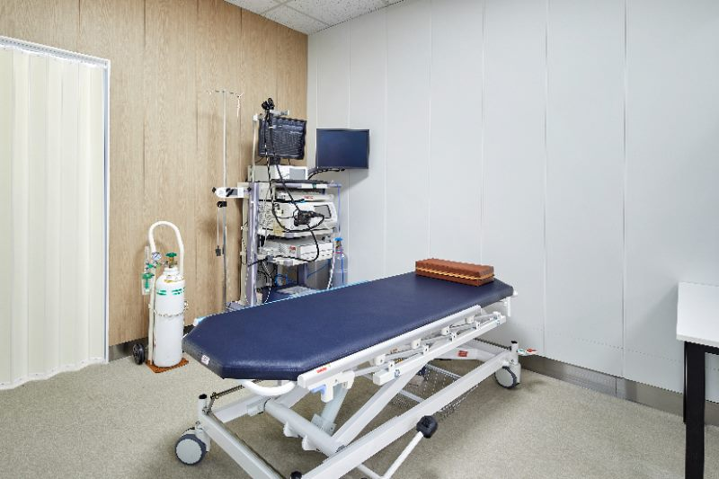
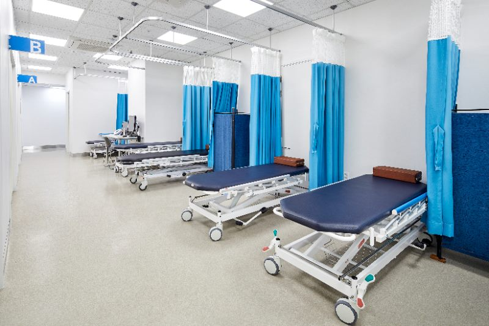
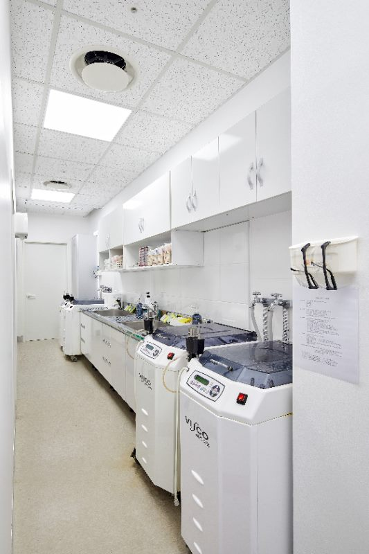

병원소개
내일내과의원 금천점을 소개합니다
병원 기본정보
오시는 길
버스
2호선 구로디지털단지역 1번 출구 환승센터에서 5617번 버스를 타고 시흥동 은행나무 하차
지하철
1호선 금천구청역에서 마을버스 1번을 타고 시흥동 은행나무 하차
차량
금천구 시흥4동 은행나무 시장 앞 에벤에셀프라자 지하주차장 이용 (주차무료)

네이버 지도에서 보기 ↗병원 내부

출입문

접수·대기실

검진 대기실

복도

혈액검사실

CT촬영실

내시경실

내시경 회복실

기기 소독 및 세척실